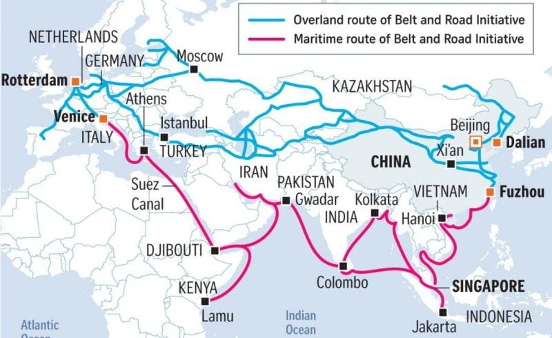
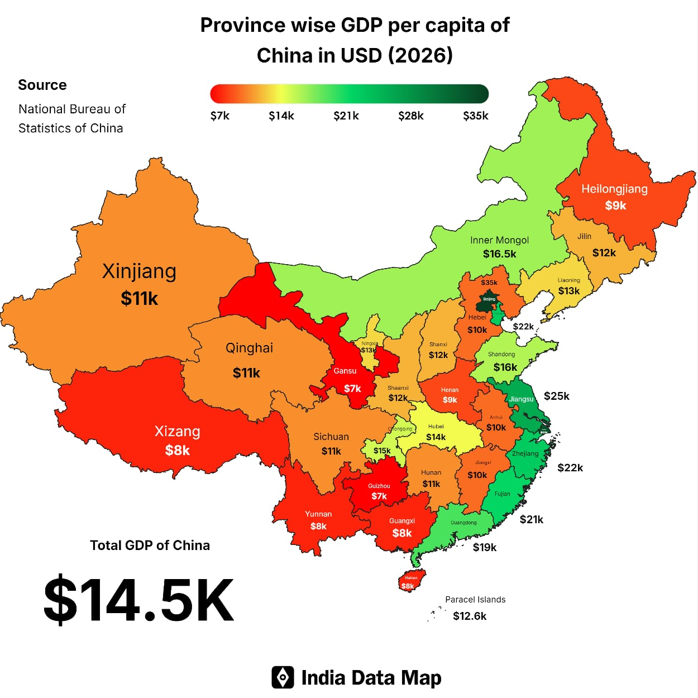
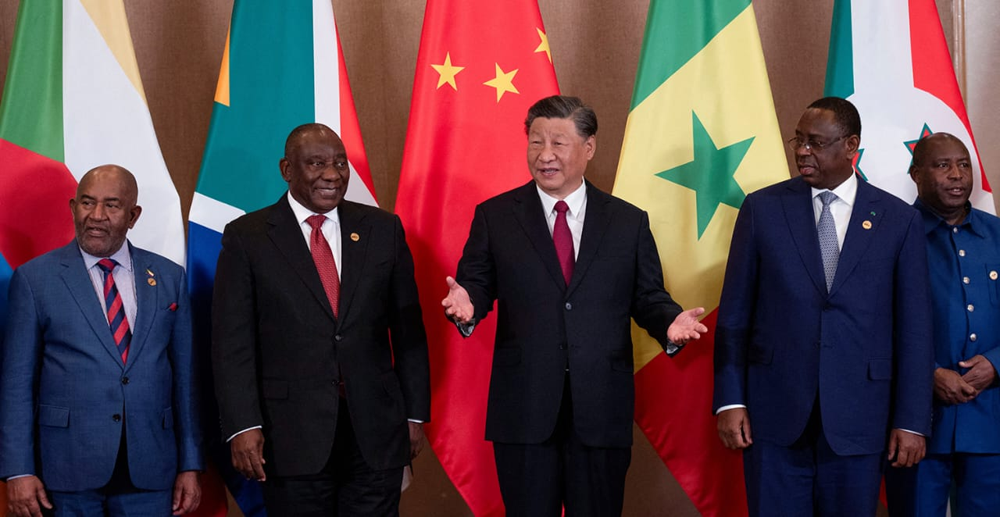
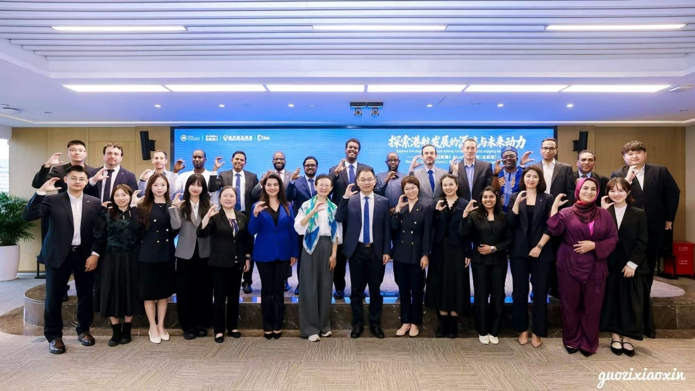
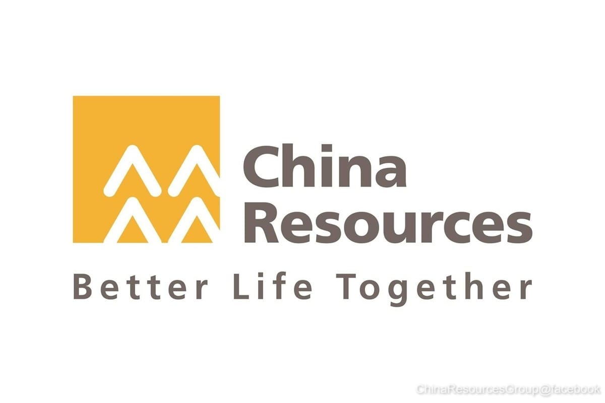
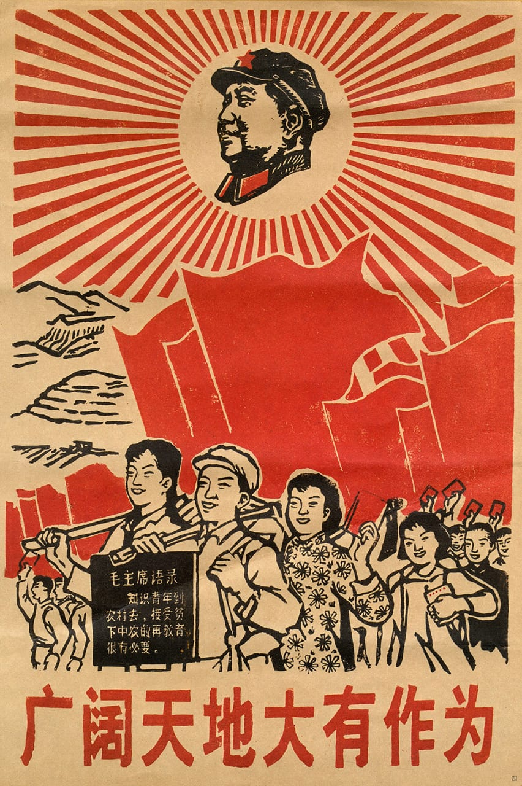

The Belt and Road Initiative, also known as the One Belt One Road (Chinese: 一带一路; pinyin: Yīdài Yīlù) and sometimes called the New Silk Road, is a global infrastructure and economic development strategy of the government of China since 2013. Projects in over 150 countries include ports, railways, highways, power stations, aviation, and telecommunications.

The initiative was launched by Chinese Communist Party general secretary Xi Jinping in 2013 while visiting Kazakhstan. It aims to invest in over 150 countries and international organizations through six overland economic corridors and the 21st Century Maritime Silk Road. The BRI is central to China's foreign policy and economy. Overland transport routes include the China–Pakistan Economic Corridor, the Eurasian Land Bridge, and the New Eurasian Land Bridge. Maritime projects under the 21st Century Maritime Silk Road include the ports of Hambantota, Sri Lanka; Gwadar, Pakistan; and Piraeus, Greece. BRI has exported China's high-speed rail, such as in the Boten–Vientiane and Jakarta-Bandung lines.
As of 2025, participating countries account for nearly 75% of the world's population and over half of global GDP, based on aggregated membership and international economic datasets. The initiative is widely described as having the potential to enhance global trade, connectivity, and economic growth, particularly in developing economies. At the same time, it has been associated with concerns regarding environmental impact, human rights and governance standards, debt sustainability, and the dual-use nature of certain infrastructure projects.



Global Chinese investment dates all the way back to the 1950s, shortly after its socialist reform from 1949 to 1952, with projects in North Korea, Vietnam, and numerous African countries. Under the leadership of CCP chairman, Mao Zedong, African independence movements prompted China's interest in the region, accounting for 58% of its economic aid between 1956 and 1969.

China funded primarily agricultural projects through companies like the China Merchants Group and China Resources Corporation, for which each built foreign branches. China made these investments alongside tactics of diplomacy to improve Sino-African relations for the sake of future economic cooperation.

Fueled by isolationist political motivations, these investments were relatively small. China's self-reliant aims generally left it incapable of any sizable foreign investment.
However, following the 1966-1976 Chinese Cultural Revolution, severe economic shortages incentivized a change.
Border tensions with the Soviet Union furthermore worried China, as apparent in Chinese Foreign Minister, Huang Hua's 1977 statement, saying that China needed to win the favor of the United States to avoid "revisionist Soviet social-imperialism", which he believed made the USSR China's "archenemy."
Other Chinese officials and allies held similar beliefs.